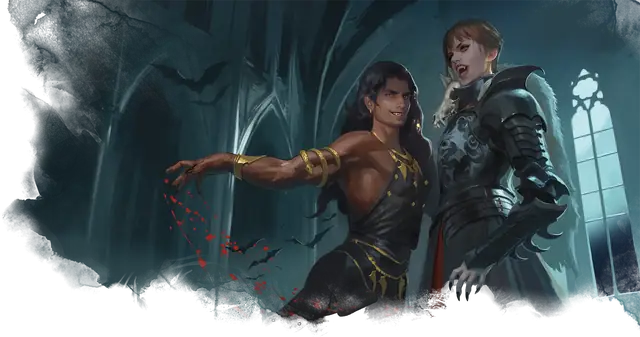

Вампир
Vampire
Средняя или Маленькая Нежить, Принципиальная Злая

Класс Защиты 16 Инициатива +14 (24)
Хиты 195 (23к8 + 92)
Скорость 40 футов, Лазания 40 футов
| мод | спас | ||
|---|---|---|---|
| СИЛ | 18 | +4 | +4 |
| ЛОВ | 18 | +4 | +9 |
| ТЕЛ | 18 | +4 | +9 |
| мод | спас | ||
|---|---|---|---|
| ИНТ | 17 | +3 | +3 |
| МДР | 15 | +2 | +7 |
| ХАР | 18 | +4 | +9 |
Сопротивление урону Некротический
Чувства Тёмное зрение 120 футов, пассивное Восприятие 17
Языки Общий плюс два других языка
Опасность 13 (10 000 опыта или 11 500 опыта в Логове; БВ +5)
Особенности
Легендарное сопротивление (3/день, или 4/день в Логове). Если вампир проваливает спасбросок, он может вместо этого сделать его успешным.
Туманный побег. Если Хиты вампира опускаются до 0 за пределами места отдыха, он использует Перевоплощение, чтобы превратиться в туман (действий не требуется). Если он не может использовать Перевоплощение, он уничтожается.
Пока у вампира в форме тумана 0 Хитов, он не может вернуться в форму вампира и обязан добраться до места отдыха в течение 2 часов, иначе будет уничтожен. Достигнув места отдыха, он снова принимает форму вампира и получает состояние Парализованный до тех пор, пока не восстановит хотя бы 1 Хит. Проведя там 1 час, он восстанавливает 1 Хит.
Паучье лазание. Вампир может лазать по сложным поверхностям, включая потолки, без совершения проверок характеристик.
Слабости вампира. Вампир обладает следующими слабостями:
Запрет. Вампир не может войти в жилище без приглашения одного из обитателей.
Текущая вода. Вампир получает 20 урона Кислотой, если заканчивает свой ход в текущей воде.
Кол в сердце. Если оружие, наносящее Колющий урон, вонзить в сердце вампира, пока он находится в своём месте отдыха и имеет состояние Недееспособный, он становится Парализован до тех пор, пока оружие не будет вынуто.
Солнечный свет. Вампир получает 20 урона Излучением, если начинает свой ход на солнечном свету. Пока вампир на солнечном свету, он получает Помеху к броскам атаки и проверкам характеристик.
Действия
Мультиатака (только в форме вампира). Вампир совершает две атаки Могильным ударом и использует Укус.
Могильный удар (только в форме вампира). Бросок рукопашной атаки: +9, досягаемость 5 фт. Попадание: 8 (1к8 + 4) Дробящего урона плюс 7 (2к6) Некротического урона. Если цель — существо Большого размера или меньше, она становится Схвачена (Сл освобождения от захвата 14) одной из двух рук.
Укус (только в форме вампира или летучей мыши). Спасбросок Телосложения: Сл 17, одно согласное или Схваченное или Недееспособное или Опутанное существо в пределах 5 футов. Провал: 6 (1к4 + 4) Колющего урона плюс 13 (3к8) Некротического урона. Максимум Хитов цели снижается на число, равное полученному Некротическому урону, а вампир восстанавливает такое же количество Хитов.
Если Гуманоид, Хиты которого уменьшены этим уроном до 0, будет похоронен, то на следующем закате он восстанет в качестве Порождения вампира, находящегося под контролем этого вампира.
Бонусные действия
Очарование (Перезарядка 5–6). Вампир сотворяет Очарование личности. Для этого ему не требуются компоненты (заклинательная характеристика — Харизма, Сл спасброска заклинаний 17), а длительность заклинания равна 24 часам. Очарованная жертва будет согласной целью для Укуса вампира, а урон от него не прекращает действие заклинания. Когда заклинание оканчивается, цель не осознаёт, что была Очарована вампиром.
Перевоплощение. Если вампир не находится под солнечным светом или в текущей воде, он либо перевоплощается в летучую мышь Крошечного размера (Скорость 5 футов, Скорость полёта 30 футов) или облако тумана Среднего размера (Скорость 5 футов, Скорость полёта 20футов, парит), либо возвращается в форму вампира. Всё, что он носит, превращается вместе с ним.
Находясь в форме летучей мыши, вампир не может говорить. Его статистика, кроме размера и Скорости, не меняются.
Находясь в форме тумана, вампир не может совершать действия, говорить и манипулировать объектами. Он ничего не весит и может входить в пространство враждебных существ и останавливаться там. Если через некое пространство может проходить воздух, то это же может сделать и туман, хотя он и не может пройти сквозь воду. Туман обладает Сопротивлением всему урону, за исключением урона, который он получает от солнечного света.
Легендарные действия
У этого существа есть 3 использования Легендарных действий (или 4 использования в его Логове); оно может немедленно после окончания хода другого существа потратить одно использование, чтобы совершить одно из следующих действий. Существо восполняет все потраченные использования в начале каждого своего хода.
Обольщение. Вампир сотворяет Приказ. Для этого ему не требуются компоненты (заклинательная характеристика — Харизма, Сл спасброска заклинаний 17). Вампир не может совершить это действие снова до начала своего следующего хода.
Удар бессмертного. Вампир перемещается на расстояние вплоть до половины своей Скорости и совершает один Могильный удар.
Бонус мастерства +5
Среда обитания Город, Подземье
Сокровища Любые
Вампиры
Пьющие кровь владыки ночи
Вампиры скрывают свою проклятую бессмертную природу и выдают себя за живых, чтобы питаться их кровью. Самые младшие и кровожадные из них часто попадают в рабство к своим создателям, а невероятно хитрые и древние вампиры веками наслаждаются сверхъестественной властью над силами ночи.
Днём бессмертные создания скрываются в своих местах отдыха, недоступные для врагов и палящих солнечных лучей. Совершите бросок по таблице «Место отдыха вампира» для вдохновения или выберите сами мрачное место упокоения вампира.
Место отдыха вампира
| 1к6 | Место отдыха вампира находится… |
| 1 | Среди корней мёртвого дерева. |
| 2 | На дне затхлого пруда. |
| 3 | В гробу, наполненном могильной землёй. |
| 4 | В огромном сосуде с кровью или уксусом. |
| 5 | В недоступном для Гуманоидов пространстве. |
| 6 | Внутри скульптуры или комплекта доспехов. |
Вампиры — безжалостные хищники и коварные манипуляторы. Они могут принять любой облик и подчинить чужую волю, а также на протяжении поколений терроризировать поселение смертных и питаться ими.
Логова вампиров
Вампиры и повелители теней стараются держаться подальше от живых и создают свои убежища в тайных уголках мультикультурных городов или в заброшенных развалинах, где они обитали будучи живыми.
Местность, в которой находится логово вампира, изменяется из-за его присутствия, что создаёт следующие эффекты:
• Дети ночи. Вампир подчиняет себе животных в пределах своих владений. От заката до рассвета все Животные Среднего размера или меньше в пределах 1 мили от логова Очарованы.
• Надвигающиеся тени. Тени в пределах 1 мили от логова двигаются, словно живые. Любое существо, кроме вампира и его союзников, которое завершает Короткий отдых в пределах 1 мили от логова, должно пройти Спасбросок Мудрости Сл 15; при провале оно не получает преимуществ от этого отдыха.
• Туманы. Область в пределах 1 мили от логова окутывает стойкий ползучий туман. Видимость в этой области Слабо заслонена. Туман не воздействует на вампира и существ по его выбору.
Если вампир погибает или перемещает своё логово в другое место, все эти эффекты мгновенно исчезают.